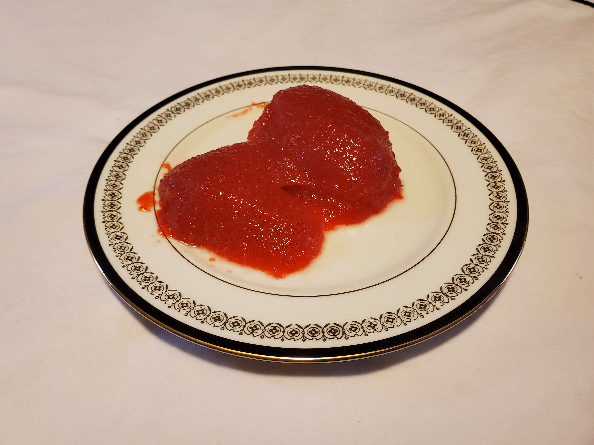

This is a recipe for "Hazel's Apple Sauce Salad"
Ingredients
- 1.5 cups of boiling water with 2 tbsp. of THE ORIGINAL Red Hots CINNAMON FLAVORED CANDY (dissolved).
- One 0.6 oz. box of sugar free cherry JELL-O.
- 1.5 cups of cold water.
- 2 2/3 cups of WHITE HOUSE All Natural Original 100% Homegrown Apple Sauce.
Directions
- Dissolve the cherry JELL-O with the boiling water and Red Hots.
- Add in the cold water and stir.
- Refrigerate for one hour.
- Blend in the apple sauce.
- Refrigerate for another 3 hours or until firm.
- Enjoy.
Download Recipe